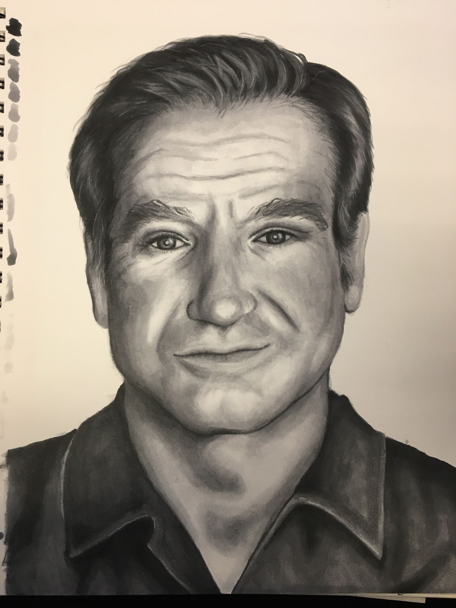
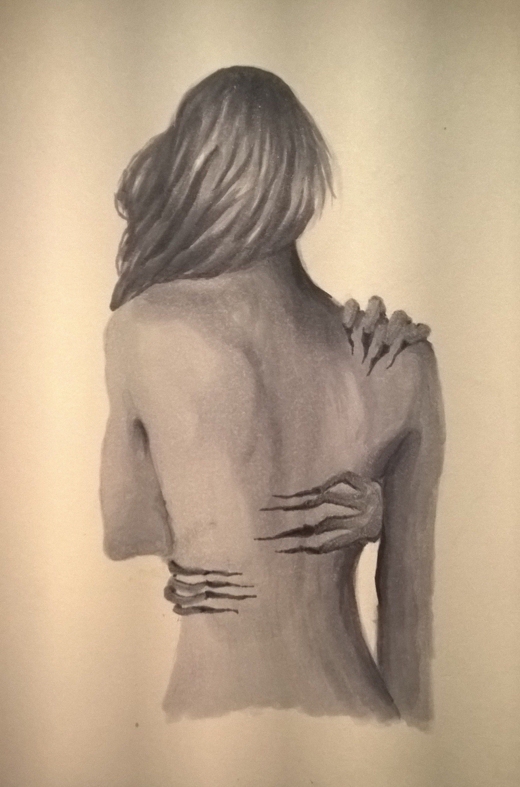

Experiment Methods
Alcohol ink works best on non‑porous surfaces such as ceramic tiles, glass, and metal. This medium is known for its vibrant colors and unpredictable patterns, especially when the ink is allowed to spread on its own. Alcohol inks typically come in standard bottles used for dripping, dropping, or mixing into resin to add color. Metallic alcohol inks work the same way but contain mica, which creates a shimmering, reflective effect. The form I use most often is alcohol ink markers, specifically the Copic brand. These markers contain alcohol‑based pigment in a pen format, allowing for smooth blending and vibrant color on materials other than traditional paper. This medium is considerably one of the harder styles for beginners because the ink reacts with air in unexpected ways. For people who prefer precision or want a simple new medium to try, I wouldn’t recommend starting with alcohol inks. It’s also important to work in a properly ventilated space due to the fumes. If you decide to try this medium, you’ll need extra isopropyl alcohol for cleaning spills, a protective barrier under your work, and the correct surface material. Regular paper won’t work — the ink bleeds heavily — so make sure to look into proper non‑porous options before beginning.

